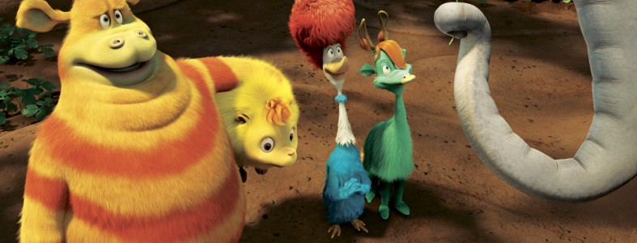

About Horton
Horton is an elephant who hears a Who! He stands up for what is right and it turns him into a hero. :)
Horton & His Little Friends
Horton's Characteristics
- He is a friendly Elephant.
- He is considered a sweet elephant
- He's trying to save the Who's & Friends.
Horton's Friends
Horton has young animal friends in the jungle where they all live in a community. He is mistreated by the tough talking Kangaroo mom, who controls the animals of the forest. CLick on the links below to read more about them: